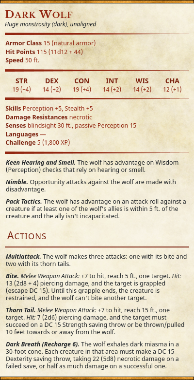

Special Conditions and Powers
This page contains unique powers and conditions!
Dark Beast Transformation
- You can expend two uses of Wild Shape at the same time to transform into a dark wolf.
- Dark Wolf Stats
{kind=link}

Dark Miasma
- Levels. This condition stacks up to 25 levels. Any levels that would put you over 25 levels have no effect.
- Life Absorption. Whenever you would regain hit points, you instead remove a number of levels equal to the healing amount. Any excess healing restores your hit points as normal.
- Death Saving Throws. While at 0 hp, if you roll a natural 20 on a death saving throw, you regain 1 hp normally, although your Dark Miasma level remains the same. If you have 25 levels, you instead stabilize and are cured of 1 level of Dark Miasma; this occurs before you would lose hp.
- Penalties. You suffer penalties based on your Dark Miasma level as described below.
- 1+: Your speed is reduced by 10 feet.
- 6+: Your blood pendant cannot be activated.
- 11+: You have disadvantage on attack rolls and ability checks.
- 16+: You are blind beyond 10 feet.
- 21+: You cannot cast leveled spells or expend any spell slots.
- 25: At the start of each of your turns, you take 5 necrotic damage which cannot be reduced in any way.
Darkblood Infection (lesser)
- Dark Nature. You cannot regain hit points through standard means; this includes resting and magical healing. You also cannot gain any temporary hit points. When you consume a source of Darkblood, you regain hit points instead of gaining temporary hit points.
- Darkblood Desire. If you start your turn within 15 feet of a Darkblood fruit, you must succeed on a DC 5 Wisdom saving throw or be compelled to consume it. Each time you succeed, the DC increases by 2 until you consume a darkblood fruit (willingly or not).
- Rejuvenation. You regain 1d6 hit points every 10 minutes. When you finish a short rest, your exhaustion level is reduced by 1. When you finish a long rest, you remove all levels of exhaustion.
- Curing. The Darkblood Infection can be cured using a casting of lesser restoration.
Darkblood Infection (greater)
- Dark Nature. You cannot regain hit points through standard means; this includes resting and magical healing. You also cannot gain any temporary hit points. When you consume a source of Darkblood, you regain hit points instead of gaining temporary hit points.
- Darkblood Reliance. You have come to rely on Darkblood to maintain your vitality. This trait replaces Darkblood Desire. For every 24 hours that pass without consuming some form of Darkblood (fruit, vital fluids), your hit point maximum decreases by 10. Whenever you consume Darkblood, you can reduce the number of maximum number of hit points equal to the amount of hp regained by the Darkblood source (you still regain hit points in this way).
- Rejuvenation. You regain 1d6 hit points every 10 minutes. When you finish a short rest, your exhaustion level is reduced by 1. When you finish a long rest, you remove all levels of exhaustion.
- Blood Asynchronicity. Your dark blood becomes unstable while on death's doorstep. When you make a death saving throw, the following may happen:
- 17-20: You are stabilized and can expend a blood pendant charge (no action required), regaining hit points from it as normal.
- 2-4: You gain an additional failed death saving throw unless you expend a blood pendant charge (no action required) to negate it. You do not regain hit points by doing this.
- Dark Resistance. If you would gain levels of Dark Miasma, you instead gain half that amount (rounded down). This does not stack with resistance to necrotic damage.
- Curing. The Darkblood Infection can be cured using a casting of greater restoration.
Drangea's Darkness
- Resistance to Death. You gain advantage on death saving throws. Additionally, you gain the effects of death ward whenever you finish a long rest; this effect lasts until you finish a long rest. If the effect ends early (due to being triggered), you must succeed on a DC 15 Constitution saving throw or gain 1 level of exhaustion which lasts until you finish a short or long rest.
- Shadow Shroud. As a bonus action, you become shrouded in shadows for 1 minute. While in this state, you deal an extra 1d6 necrotic damage on weapon attacks which ignores resistance and immmunity to necrotic damage. Additionally, you extend the reach of all melee weapons by 5 feet and ignore the long range penalty on ranged weapons. You must finish a short or long rest before you can use this ability again.
Hark's Blessing of Health
- This power is now unavailable.
- Your Constitution score increases by 2, up to a maximum of 22.
- Maintaining this blessing is contingent upon maintaining favor with Oghma.